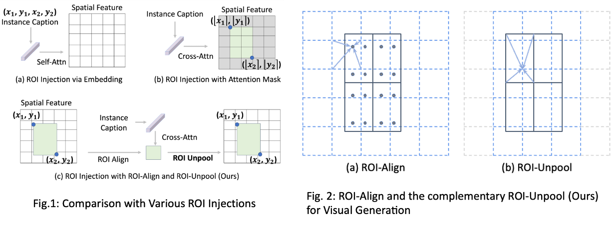
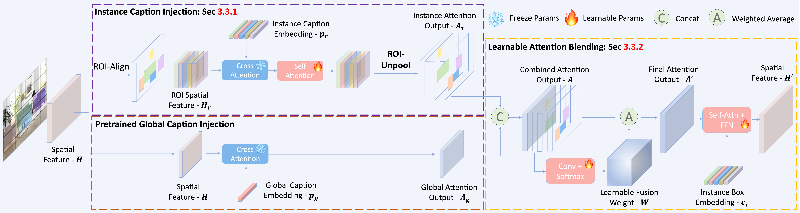
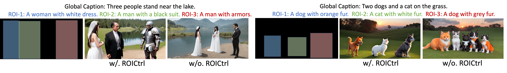
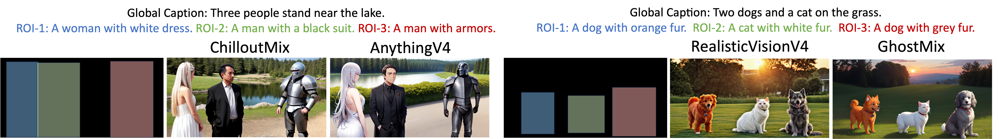
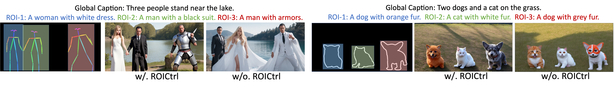
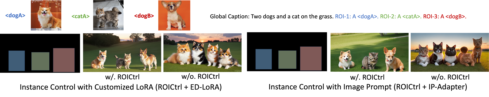

📖TL;DR: ROICtrl, built on ROI-Align and the newly proposed ROI-Unpool, can extend existing diffusion models and their add-ons (e.g., ControlNet, T2I-Adapter, IP-Adapter, ED-LoRA) to support controllable multi-instance generation.
Control Diffusion Model with Free-Form Instance Caption 👇 👇 👇

Abstract
Natural language often struggles to accurately associate positional and attribute information with multiple instances, which limits current text-based visual generation models to simpler compositions featuring only a few dominant instances. To address this limitation, this work enhances diffusion models by introducing regional instance control, where each instance is governed by a bounding box paired with a free-form caption. Previous methods in this area typically rely on implicit position encoding or explicit attention masks to separate regions of interest (ROIs), resulting in either inaccurate coordinate injection or large computational overhead. Inspired by ROI-Align in object detection, we introduce a complementary operation called ROI-Unpool. Together, ROI-Align and ROI-Unpool enable explicit, efficient, and accurate ROI manipulation on high-resolution feature maps for visual generation. Building on ROI-Unpool, we propose ROICtrl, an adapter for pretrained diffusion models that enables precise regional instance control. ROICtrl is compatible with community-finetuned diffusion models, as well as with existing spatial-based add-ons (\eg, ControlNet, T2I-Adapter) and embedding-based add-ons (\eg, IP-Adapter, ED-LoRA), extending their applications to multi-instance generation. Experiments show that ROICtrl achieves superior performance in regional instance control while significantly reducing computational costs.
Comparison of Various ROI Injections

- (a) Limitations of ROI Injection with Embedding:
- Inaccurate spatial alignment due to implicit box embedding.
- Attribute binding issues caused by the use of self-attention for injecting instance captions.
- (b) Limitations of ROI Injection with Attention Mask:
- Computation cost is related to the feature resolution (costly because of the large feature resolution in visual generation).
- Coordinate quantization errors make it difficult to accurately inject instance captions to spatial feature map.
- (c) ROI Injection with ROI-Align and ROI-Unpool (Ours):
- Computation cost is independent of the feature resolution.
- No quantization errors when injecting instance captions to spatial feature map.
Method Overview --- ROICtrl

In parallel with the pretrained global caption injection, we introduce an additional instance caption injection. The global attention output and instance attention output are then fused using learnable blending.
Applications
1. Instance Control (or Layout Control)

2. Compatible to Community-Finetuned Models

3. Compatible to Spatial-Based Add-ons (e.g., T2I-Adapter, ControlNet)

4. Compatible to Embedding-Based Add-ons (e.g., IP-Adapter, ED-LoRA)

5. Continue Generation with Local Change

Bibtex
@article{gu2024roictrl,
title={ROICtrl: Boosting Instance Control for Visual Generation},
author={Gu, Yuchao and Zhou, Yipin and Ye, Yunfan and Nie, Yixin and Yu, Licheng and Ma, Pingchuan and Lin, Kevin Qinghong and Shou, Mike Zheng},
journal={arXiv preprint arXiv:2411.17949},
year={2024}
}